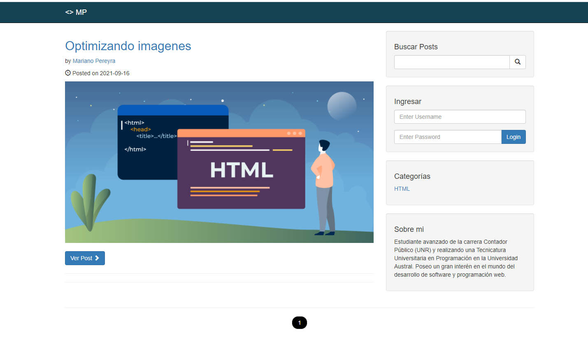

Tecnologías


Descripción: Blog de uso personal
En la página principal se pueden observar los blogs y posee las siguientes funcionalidades:
- Busquedor de blogs
- Ver blogs por categoria
- Ver blog por autor
- Añadir comentarios
- Paginación
- Log in
Tambien cuenta con un CMS para el administrador que iniciea sesion con las siguientes funcionalidades:
- Tablero, con informacion resumida de cantidad de posts, comentarios, etc.
- Seccion posts, se ve una tabla con todos los posts, se pueden crear, editar y eliminar
- Seccion categorias, donde se pueden crear, editar y eliminar.
- Seccion comentarios, se ve una tabla con lo compentarios, se pueden aprobar, desaprobar o eliminar
- Seccion usuarios, se ve una tabla con los usuarios, se pueden crear, editar y eliminar
- Seccion perfil, donde se pueden modificar los datos del usuario logueado